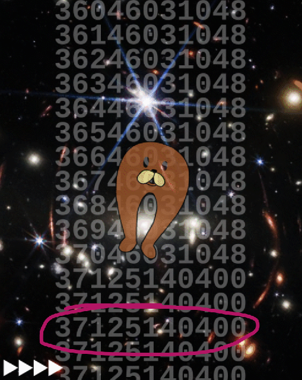

On page 1.37 the timestamps stop increasing here, at 37125140400.

You can plug that into your favorite timestamp converter; I like the vintage look of this one:
[ANIMATED]

Welcome to the 32nd century.
Welcome to the 32nd century.